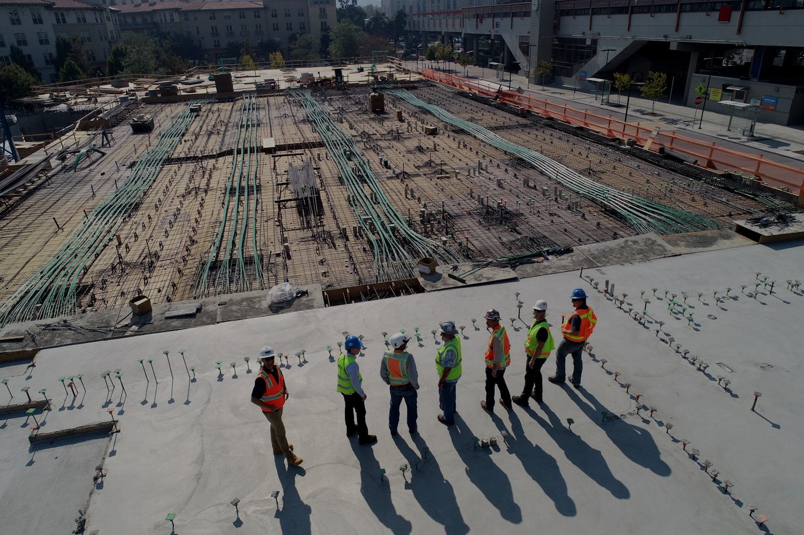

Presupuesto del proyecto
100 UPC y 6 UVC
Ecuador · Infraestructura y desarrollo
Proyectos complejos.
Dirección clara.
Conecto ingeniería civil, gestión ejecutiva y visión de negocio para llevar iniciativas importantes del análisis a la ejecución.
Ingeniero CivilMBAPMP®
01Visión que aterriza

INFRAESTRUCTURAECUADOR
PIRKEI AVOT 2:16 · RABÍ TARFÓN
לא עליך המלאכה לגמור, ולא אתה בן חורין להבטל הימנה
“No te corresponde terminar toda la obra; tampoco eres libre de abandonarla.”Adaptación breve · Pirkei Avot 2:16 ↗
EXPERIENCIA EN CONTEXTO
Escala real.
Roles concretos.
Soterramiento y subtransmisión
Proyecto Yachay
Valor de obra reportado
Ruta Viva · Fase II
Montos totales de cada proyecto u obra; el rol desempeñado se especifica por separado.
01 / PERFILINGENIERÍA CON VISIÓN EJECUTIVA
INFRAESTRUCTURA
Y DESARROLLOECUADOR
— LATAM
Y DESARROLLOECUADOR
— LATAM
TÉCNICA + LIDERAZGO
Entender la obra.
Dirigir el conjunto.
Soy ingeniero civil y ejecutivo de proyectos. Mi experiencia combina trabajo técnico, dirección de obra, gestión institucional y desarrollo de iniciativas.
He participado en proyectos de infraestructura vial, energética, seguridad y servicios públicos. Esa mirada, desde el detalle técnico hasta la coordinación de equipos y decisiones, guía la forma en que abordo cada reto.
Actualmente soy Gerente General y Representante Legal de Yehuda Levi Ecuador. Desde esta posición impulso el desarrollo y la promoción de proyectos, su evaluación técnica y económica, y su administración.
Ingeniería con propósito. Gestión con responsabilidad.
Descargar CV
02 / TRAYECTORIADE LA INGENIERÍA A LA DIRECCIÓN
Una carrera construida
desde el terreno.
Distintas responsabilidades, una misma prioridad: que la planificación, las personas y la ejecución avancen en la misma dirección.
2008—2015
GEODATA · VÍA CONSULTORES · CEMOSA
01
Base técnica en obra y cálculo
Inicio como residente de obra y evolución hacia diseño estructural, cálculos hidráulicos e hidrológicos y fiscalización vial. Participación en proyectos de agua, riego, energía y Ruta Viva Fase II.
2015—2017
SECOB · SECTOR PÚBLICO
02
Dirección zonal de infraestructura
Dirección y asistencia técnica para planificación, contratación, diseño, fiscalización y ejecución de obras en distintos sectores.
2017—HOY
PROYECTOS · INFRAESTRUCTURA
03
Gerencia y administración de proyectos
Roles de gerencia, administración y jefatura técnica en iniciativas de infraestructura eléctrica, telecomunicaciones y seguridad.
2020—HOY
YEHUDA LEVI ECUADOR
04
Gerencia general y desarrollo
Dirección de proyectos nacionales: promoción, evaluación técnica y económica, y administración.
03 / PROYECTOSEXPERIENCIA QUE SE PUEDE EXAMINAR
El trabajo habla
en concreto.
Dieciocho años de ejercicio profesional desde 2008: del cálculo estructural y la fiscalización a la dirección de contratos y carteras de infraestructura pública.
CARTERA DOCUMENTADA
USD 614,3M
en proyectos registrados a lo largo de la trayectoria
USD 543,7MConstrucción, supervisión y gerenciamiento
USD 70,6MConsultoría y fiscalización
88,5%del total corresponde a obras
Cálculo consolidado de la hoja de vida: proyectos repetidos contados una sola vez; Ruta Viva se considera por el monto total de la obra fiscalizada.
01INFRAESTRUCTURA · SEGURIDAD
MINISTERIO DEL INTERIOR2023—
100 UPC
y 6 UVC
Proyecto de construcción de Unidades de Policía Comunitaria y Unidades de Vigilancia Comunitaria.
USD 106M monto del contratoGerente de proyecto administrador del contrato
02ENERGÍA · TELECOMUNICACIONES
CIUDAD DEL CONOCIMIENTO YACHAYURCUQUÍ · ECUADOR
Infraestructura
que conecta.
Soterramiento eléctrico y de telecomunicaciones en 33 km de vías, con línea de subtransmisión y subestación de 25 MW.
USD 63,6M monto del proyectoGerente técnico de proyectos
SECOB · 2015—2017
228 obrasUSD 371M en cartera
Dirección zonal de infraestructura pública.
Planificación y asistencia técnica para una cartera de salud, seguridad, educación, producción, desarrollo social y turismo.
RUTA VIVA · FASE II · CEMOSA
USD 59,4Mmonto total de obra
Fiscalización vial con foco en el detalle.
Obra de 6 km: seis pasos superiores, tres inferiores, cinco peatonales, dos intercambiadores y once colectores. Rol: fiscalizador.
TECNOLOGÍA APLICADA A RIESGOS
Desarrollo de QHIDRO, programa para apoyar la evacuación temprana en las quebradas Ugtupungo, Chaguarpata y Reina de Quito, entregado al ECU 911.
04 / ENFOQUELO QUE APORTO A CADA INICIATIVA
CLARIDAD PARA AVANZAR
No basta con una buena idea.
Hay que hacerla posible.
Evaluación
con criterio
Lectura técnica y económica para comprender alcance, restricciones y viabilidad antes de avanzar.
↗Gestión
con estructura
Responsabilidades, seguimiento y comunicación que dan visibilidad a la ejecución.
↗Ingeniería
con contexto
Soluciones que consideran normativa, territorio, operación y propósito público.
↗Alianzas
que construyen
Coordinación de actores para conectar capacidades, decisiones y desarrollo de proyectos.
↗ECUADOR / LATAM
DIRECCIÓN ACTUAL
Desarrollo de proyectos
Desarrollo de proyectos
con visión de futuro.
Como Gerente General y Representante Legal de Yehuda Levi Ecuador, trabajo en la promoción, evaluación y administración de iniciativas nacionales. Mi aporte une conocimiento técnico, lectura económica y gestión ejecutiva.
05 / DIRECCIÓN
05 / FORMACIÓNUNA BASE MULTIDISCIPLINARIA
Aprender para
dirigir mejor.
La experiencia se fortalece con método, estudio y actualización permanente.
Ingeniería Civil
Universidad Técnica Particular de Loja · UTPL
MBA · Gestión de Proyectos
Formación MBA con enfoque profesional en dirección de proyectos
Project Management Professional
Certificación PMP®
Maestría en Ingeniería Matemática y Computacional
Universidad Internacional de La Rioja · UNIR · 2021
UNA CONVERSACIÓN PUEDE SER EL INICIO
¿Qué proyecto
¿Qué proyecto
podemos hacer avanzar?
Conversemos sobre una iniciativa, una alianza o un reto de infraestructura.
Hablemos por WhatsApp
ESCANEA · GUARDA EL CONTACTO
Byron Rivadeneira
La tarjeta incluye mis datos y fotografía. También puedes descargarla.
Descargar contacto (.vcf) ↓